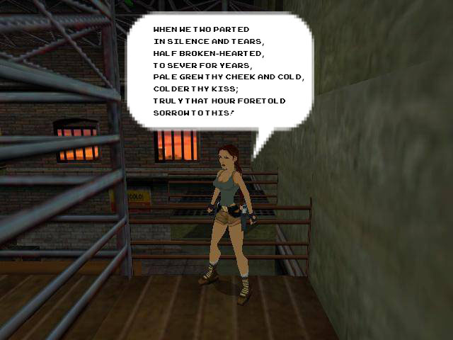

<!DOCTYPE html>
<html>
</html>
<head>
	<title>Republish a Text</title>
</head>
<body>
<h1>Republish a Text</h1>

<h2>Attempt One</h2>
<p>For this project, I decided to use old childhood games to publish my poem When We Two Parted by Lord Byron and post them in an album on Facebook entitled <em>Childhood games reciting "When We Two Parted" poem By Lord Byron.</em> </p>

<br><br>
<br><br>
<br><br>
<br><br>
<br><br>

<h2>Attempt Two</h2>

<p>FAnd for the second attempt I used Prezi to layout my poem in an interactive way and shared it via Twitter</p>

<a href="https://prezi.com/9frcy-f-nph5/when-we-two-parted/">Poem in Prezi </a><br><br>

<br>


 

</body>